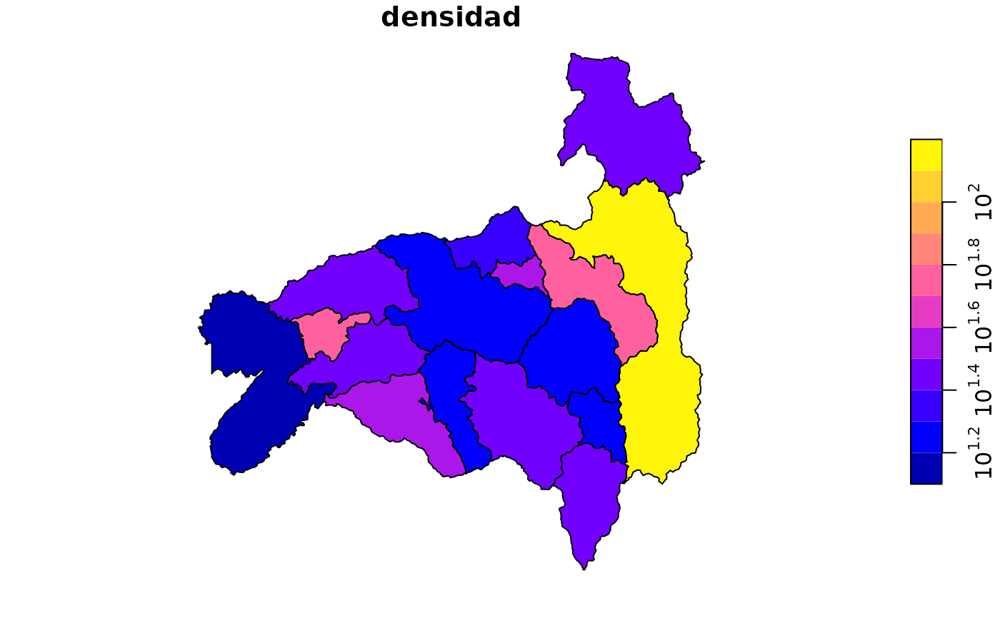

Devuelve la capa geográfica del nivel indicado (del paquete geoecu) con la población de pobecu ya unida, lista para mapear. Ambos paquetes usan los códigos DPA, así que no hace falta preparar nada.
Arguments
- nivel
"canton"(por defecto),"provincia"o"parroquia".- anio
Año o años. Por defecto, el año en curso si está disponible; si no, el último año disponible.
- provincia
Provincias a incluir, por nombre (sin importar tildes ni mayúsculas) o código:
"Loja","11"o11.NULLincluye todo el país.- canton
Cantones a incluir (niveles
"canton"y"parroquia"), por nombre o código. Si un nombre se repite en varias provincias (por ejemplo, Bolívar u Olmedo), usa el código o indica tambiénprovincia.- sexo
Si es
TRUE, desagrega por sexo al nacer ("hombre","mujer").- area
Si es
TRUE, desagrega por área de residencia ("urbana","rural"). Solo para los niveles nacional, provincial y cantonal, y para los años 2010-2035.- edad
Desagregación por edad:
NULL(por defecto): sin desagregar."quinquenal": grupos de 5 años ("0-4", ...,"100+"; en el nivel parroquial el último grupo es"85+")."simple": años cumplidos, de 0 a 100 (100 = 100 y más)."etapas": etapas de vida del INEC (0-11, 12-17, 18-29, 30-64, 65+).Un vector numérico con las edades de inicio de cada grupo, por ejemplo
c(0, 1, 5, 15, 65)para 0, 1-4, 5-14, 15-64 y 65+.
Los grupos quinquenales (y los cortes múltiplos de 5) vienen dentro del paquete. Las edades simples, las etapas y los demás cortes usan datos que se descargan la primera vez (ver
pobecu_datos_disponibles()) y no están disponibles para parroquias.- resolucion, crs
Resolución y sistema de coordenadas de la capa, como en
geoecu::read_cantones().
Value
Un objeto sf con las columnas de agrupar_unidades(), las de
poblacion() (anio, poblacion y las desagregaciones pedidas) y
densidad (habitantes por km²). Con varios años o desagregaciones, cada
polígono se repite una vez por combinación (útil para facet_wrap()).
Details
Las cifras de población usan las unidades del Censo 2022, y geoecu (desde
la versión 0.4.0) la Organización Territorial del Estado del CONALI
(2026). Para que cada cifra se dibuje sobre el territorio al que
corresponde, la capa se convierte primero a las unidades del censo con
agrupar_unidades(): por ejemplo, el cantón Borbón se dibuja dentro de
Eloy Alfaro y la parroquia Sosote dentro de Rocafuerte. Con geoecu 0.3.0
y anteriores, las parroquias urbanas se fusionan en su cabecera cantonal.
Las zonas en estudio de geoecu (territorios con límites aún no resueltos)
se conservan para que el mapa no tenga huecos, con población NA en cada
año y desagregación.
Examples
m <- pob_mapa("canton", anio = 2025, provincia = "Loja")
plot(m["densidad"], logz = TRUE)

# Parroquias de Cuenca
pob_mapa("parroquia", anio = 2030, canton = "Cuenca")
#> Nota: las cifras parroquiales son una estimación de pobecu a partir de las proyecciones cantonales del INEC; no son cifras oficiales. Ver ?pob_parroquias. (Este aviso se muestra una vez por sesión.)
#> Simple feature collection with 22 features and 11 fields
#> Geometry type: MULTIPOLYGON
#> Dimension: XY
#> Bounding box: xmin: -79.67032 ymin: -3.17256 xmax: -78.84732 ymax: -2.5169
#> Geodetic CRS: WGS 84
#> First 10 features:
#> dpa_parroq parroquia tipo dpa_canton canton
#> 1 010150 Cuenca cabecera cantonal 0101 Cuenca
#> 2 010151 Baños parroquia rural 0101 Cuenca
#> 3 010152 Cumbe parroquia rural 0101 Cuenca
#> 4 010153 Chaucha parroquia rural 0101 Cuenca
#> 5 010154 Checa parroquia rural 0101 Cuenca
#> 6 010155 Chiquintad parroquia rural 0101 Cuenca
#> 7 010156 Llacao parroquia rural 0101 Cuenca
#> 8 010157 Molleturo parroquia rural 0101 Cuenca
#> 9 010158 Nulti parroquia rural 0101 Cuenca
#> 10 010159 Octavio Cordero Palacios parroquia rural 0101 Cuenca
#> dpa_provin provincia area_km2 anio poblacion geometry
#> 1 01 Azuay 71.673 2030 368885 MULTIPOLYGON (((-78.98188 -...
#> 2 01 Azuay 251.444 2030 24962 MULTIPOLYGON (((-79.04957 -...
#> 3 01 Azuay 75.132 2030 6978 MULTIPOLYGON (((-78.97793 -...
#> 4 01 Azuay 379.992 2030 2010 MULTIPOLYGON (((-79.29187 -...
#> 5 01 Azuay 110.859 2030 3464 MULTIPOLYGON (((-78.98794 -...
#> 6 01 Azuay 93.443 2030 6283 MULTIPOLYGON (((-78.98658 -...
#> 7 01 Azuay 15.960 2030 9021 MULTIPOLYGON (((-78.89031 -...
#> 8 01 Azuay 983.773 2030 6594 MULTIPOLYGON (((-79.2892 -2...
#> 9 01 Azuay 27.038 2030 8633 MULTIPOLYGON (((-78.93991 -...
#> 10 01 Azuay 20.878 2030 2640 MULTIPOLYGON (((-78.97988 -...
#> densidad
#> 1 5146.777727
#> 2 99.274590
#> 3 92.876537
#> 4 5.289585
#> 5 31.246899
#> 6 67.238851
#> 7 565.225564
#> 8 6.702766
#> 9 319.291368
#> 10 126.448894